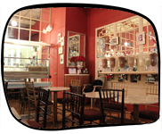
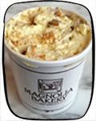

Can't get enough chocolate? Or are cupcakes your thing? Well whatever your favorite might be, you're sure to find a sweet treat to satisfy your sweet tooth at one of these places:
This place may be small but they serve full three course meals, where every course is dessert. Chika serves up tiny, intricate, hand-made desserts, and delicious homemade sorbets. You can pair your dessert feast with wine or tea. There's also a take-out shop across the street where you can get a quick fix. Pick me!

Get cute little cupcakes and brownies to go, or stay a while and have some lactose-intolerant-friendly small plates. If you're hungry, you can get a meal here too. Pick me!
This chocolate is to die for. In the back of the chocolate store there's a cute little café where you can eat. If you're thirsty, grab a cup of the thickest hot chocolate ever. Pick me!
Babycakes serves cupcakes that are good for you. Vegan cupcakes that are also free from common allergens. They also have baked doughnuts so you can feel less bad about indulging. Pick me!
Need a cookie fix at 3am? Insomnia Cookies delivers freshly baked cookies straight to your door into the wee hours of the morning. Perfect for taking a study break from cramming for exams. Pick me!
Of course the famed Magnolia Bakery is on this list. But don't just go for the cupcakes - the German chocolate cake is the real show-stopper. Try the banana pudding too! Pick me!
This shop is so much fun! From the funny ice cream creations to the funny names, everything is a win. Try the Bea Arthur or the Salty Pimp. Look out for the Big Gay Ice Cream Truck too! Pick me!

Doughnuts galore! And fancy flavors too. The seating area and the walls are covered in doughnut-shaped pillows. They also serve Intelligentsia coffee. Pick me!

Only real insiders know about this place. You'll have to be adventurous to try out this sweet tofu dessert. Pick me!

This place has all of the chocolate creations you could image. Try the chocolate pizza! You can even just get a syringe filled with liquid chocolate. Pick me!